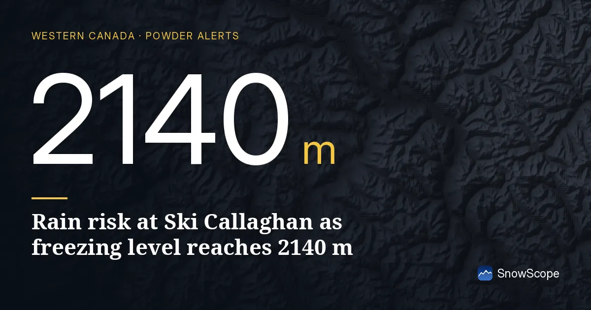
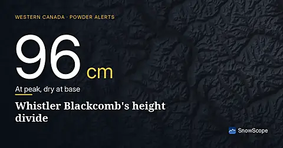

Rain risk at Ski Callaghan as freezing level reaches 2140 m
Snow fell steadily at Ski Callaghan over the past three days—44 cm of fresh powder on the upper slopes. On 7 November, the freezing level is forecast to rise to 2140 m, well above the top of the lifts at 998 m, so rain will fall where there is now ski-able snow.
See the live snow forecast for Ski Callaghan in the SnowScope appSnow depth, powder alerts and the 3D map, free.
Why 7 November brings rain instead of snow
The freezing level is the height where air temperature reaches 0°C. It is the boundary between snow and rain. At Ski Callaghan, today (6 November) the freezing level peaks at 1910 m, still above the top lift at 998 m—but only. By 7 November, however, the forecast shows the freezing level climbing dramatically to 2140 m. That is high above the mountain's top.
Throughout the entire ski area, from base at 848 m to the top, the air will be above 0°C. Precipitation will fall as rain. The 44 cm of fresh powder that arrived over 5 and 6 November will soften quickly. Where snow was accumulating cold yesterday, tomorrow it will be melting. This freeze-thaw cycle is typical of November skiing in coastal mountains.
| Resort | Snow depth | New snow, 72 h | Coming, next days | Top |
|---|---|---|---|---|
| Ski Callaghan | 41 cm | 44 cm | 63 cm | 998 m |
| Tweedsmuir Ski Club | 46 cm | 38 cm | 34 cm | 1,650 m |
| Whistler Blackcomb | 78 cm | 33 cm | 74 cm | 2,259 m |
| Mount Cain Alpine Park | 71 cm | 21 cm | 50 cm | 1,616 m |
| Sasquatch | 17 cm | 11 cm | 20 cm | 1,316 m |

Fresh powder across the region
Over the past 72 hours, Western Canada has seen solid early-season snow. Ski Callaghan received 44 cm on the upper slopes. Nearby Tweedsmuir Ski Club, sitting higher in the mountains, also caught powder—38 cm in the same period. Across the broader region, 52 of the 57 tracked ski areas now have snow cover.
The snow was wet and heavy, typical of coastal mountain storms. By today, 6 November, the snowpack is settling and stabilizing. Some of that early powder is already becoming a foundation for the coming weeks.
What to expect on 7 November
Ski Callaghan is forecast to receive 12 cm of new precipitation on 7 November. At lower elevations around the base at 848 m, this will fall entirely as rain. Higher on the mountain, near the top at 998 m, the rain will be heavier and may mix with wet snow.
The rain will wash the existing snowpack, cleaning the surface. When temperatures drop overnight as cold air moves in, an ice crust will form under any remaining loose snow. This crust makes skiing difficult: edges catch, skis chatter, and speed control becomes tricky on smooth ice. The day will be challenging for those chasing powder.
How fast the weather resets
The warm spell is brief. By 8 November, arctic air moves in from the north and the freezing level drops sharply from 2140 m to 1680 m. On 8 November itself, 49 cm of new snow is forecast at Ski Callaghan. The snow will fall cold and light, sticking immediately as dry powder.
The ice crust from 7 November will be buried under this fresh accumulation. For skiers, patience pays off. Those who can wait and ski on 9 November should find clean powder over a stable base, with the freeze-thaw mess already in the past.
Where to find snow on 7 November
If you want to avoid the worst of the rain on 7 November, elevation is your best strategy. Tweedsmuir Ski Club, at 1650 m summit, sits much higher in the mountains than Ski Callaghan. Its freezing level on 7 November peaks at only 1260 m—well below the top.
The upper slopes will stay cold enough for snow, though the boundary between snow and rain will be distinct. Snow is forecast at Tweedsmuir: 13 cm on 7 November and 20 cm on 8 November. If you have the option, spending 7 November at a higher resort is an easy way to avoid rain-crusted surface.
Shallow snow and early-season rocks
Ski Callaghan currently has 41 cm on the upper slopes. While 44 cm of fresh snow in 72 hours is solid early accumulation, the total depth is still shallow. Rocks and vegetation are within reach. The freeze-thaw cycle on 7 November and the icing that follows will expose more terrain.
After the new snow on 8 November, depth will improve, but until then, stay alert on lower slopes and exposed ridges. Keep off-piste skiing for days when you have checked the official avalanche bulletin and when new snow is cold and settled.
Tips for skiers
- Seek higher elevations on 7 November: Tweedsmuir Ski Club at 1650 m will stay above the rain when Ski Callaghan's slopes see rain, with freezing level peaking at only 1260 m.
- Expect rain on the surface on 7 November if you ski Ski Callaghan; an ice crust will form overnight after 12 cm of new precipitation falls as rain.
- Check the official avalanche bulletin before going off-piste: rain on snow followed by new powder can trigger slides on steep slopes.
- Wait for 8 November if you can; 49 cm of new snow will fall when the freezing level drops to 1680 m, and powder conditions will be much better.
- Stay on-piste given the shallow 41 cm total depth: rocks and stumps are still visible or close to the surface on lower slopes.
About these numbers
Resort snow depths are the deepest snow on the resort's upper slopes on the date shown; they are estimates for an area, not a measurement at one point. Forecasts can change. Always read the official avalanche bulletin before going off-piste.
Official avalanche bulletins: Avalanche Canada
Cite this report
For research, teaching or the press: the numbers and charts are free to reuse under CC BY 4.0 with this citation.
SnowScope (2026), Rain risk at Ski Callaghan as freezing level reaches 2140 m, https://snowscope.app/blog/en/2026/11/western-canada-fresh-snow-powder-alert-6-november-2026.html, accessed 2026-11-06
SnowScope (Atlas Labs). (2026, November 6). Rain risk at Ski Callaghan as freezing level reaches 2140 m. SnowScope snow reports. https://snowscope.app/blog/en/2026/11/western-canada-fresh-snow-powder-alert-6-november-2026.html
BibTeX
@misc{snowscope2026westerncanadafreshsnowpo,
author = {{SnowScope (Atlas Labs)}},
title = {Rain risk at Ski Callaghan as freezing level reaches 2140 m},
year = {2026},
month = nov,
howpublished = {\url{https://snowscope.app/blog/en/2026/11/western-canada-fresh-snow-powder-alert-6-november-2026.html}},
note = {Published 2026-11-06 17:00 UTC; accessed 2026-11-06}
}· CC BY 4.0 · Methods, data and tools →
Ski Callaghan: snow and temperature by height, this winter vs last (tools) →
Follow Ski Callaghan
Free: a message when fresh snow is coming, and the forecast every morning.
More snow reports

Ski Callaghan leads Western Canada forecast with 48 cm new snow through 7 November, mostly on 6th, with higher elevations capturing deeper accumulation.

More snow is on the way: by 10 November our forecast gives 103 cm at Whistler Blackcomb, 99 cm at Ski Callaghan and 74 cm at Mount Cain Alpine Park. …

Whistler Blackcomb received 100 cm of fresh snow in 72 hours to 8 November, but it fell unevenly: 96 cm at the summit, none at the base.